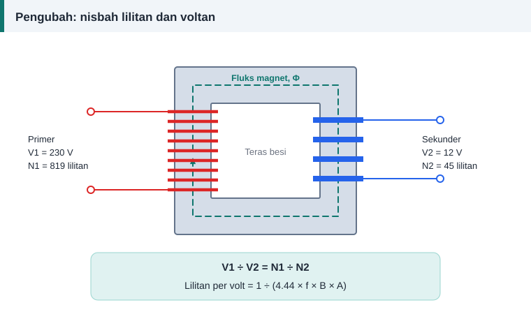

Pengiraan belitan
Lilitan Pengubah Kecil: Mengira Lilitan Per Volt dan Saiz Dawai
Pengubah kecil pada pengecas, penguat dan panel kawalan dililit semula dengan prinsip yang sama seperti motor. Bezanya, tiada alur dan tiada kutub: hanya teras, dua belitan dan satu nombor penting, iaitu lilitan per volt.


Lilitan per volt
Lilitan per volt = 1 ÷ (4.44 × f × B × A)
A ialah luas bersih teras dalam meter persegi dan B ketumpatan fluks puncak dalam tesla. Untuk kerja bengkel, lebih mudah menggunakan sentimeter persegi:
Lilitan per volt = 10 000 ÷ (4.44 × f × B × A)
Pada 50 Hz dan B = 1.0 T, rumus itu menjadi kira-kira 45 ÷ A.
Luas teras
Luas kasar ialah lebar lidah tengah didarab dengan tebal tindanan laminasi. Darabkan dengan faktor tindanan sekitar 0.9 untuk mengambil kira salutan penebat di antara kepingan.
Memilih ketumpatan fluks
Bagi laminasi biasa yang grednya tidak diketahui, 1.0 hingga 1.2 T ialah pilihan berhati-hati. Fluks yang lebih tinggi menjimatkan lilitan, tetapi teras lebih panas dan arus pemagnetan naik.
Contoh: 230 V kepada 12 V, 100 VA
Teras mempunyai lidah tengah selebar 38 mm dan tindanan setebal 37 mm.
| Langkah | Kiraan | Keputusan |
|---|---|---|
| Luas bersih teras | 3.8 × 3.7 × 0.9 | 12.65 cm² |
| Lilitan per volt | 10 000 ÷ (4.44 × 50 × 1.0 × 12.65) | 3.56 |
| Lilitan primer | 230 × 3.56 | 819 |
| Lilitan sekunder | 12 × 3.56 × 1.05 | 45 |
| Arus sekunder | 100 ÷ 12 | 8.33 A |
| Arus primer | 100 ÷ (0.9 × 230) | 0.48 A |
| Dawai sekunder pada 3 A/mm² | Luas 2.78 mm² | 1.90 mm |
| Dawai primer pada 3 A/mm² | Luas 0.161 mm² | 0.475 mm |
Arus primer dikira dengan andaian kecekapan 90%. Saiz dawai dibundarkan ke atas kepada saiz piawai seterusnya.
Mengapa lilitan sekunder ditambah 5%
Di bawah beban, voltan susut pada rintangan kedua-dua belitan. Tambahan lilitan sekunder sekitar 5% mengimbanginya bagi pengubah kecil, supaya voltan keluaran berbeban hampir dengan nilai yang dikehendaki.
Adakah teras cukup besar?
Petua bengkel untuk 50 Hz: luas teras dalam sentimeter persegi kira-kira 1.15 kali punca kuasa dua kuasa dalam volt-ampere. Untuk 100 VA, itu 11.5 cm². Teras contoh dengan 12.65 cm² memadai. Petua ini hanya anggaran permulaan.
Semak ruang tingkap
Jumlah luas kuprum kedua-dua belitan mesti muat di dalam tingkap teras bersama gelendong dan penebat. Sebagai panduan kasar, kuprum hanya boleh mengisi sekitar 30% hingga 40% luas tingkap.
Penebatan dan keselamatan
Belitan primer dan sekunder mesti dipisahkan oleh penebat yang kukuh, kerana bahagian sekunder voltan rendah sering disentuh pengguna. Lilit primer dahulu, balut beberapa lapis pita penebat, kemudian lilit sekunder. Pasang fius pada bahagian primer.
Kira dengan kalkulator
Tab "Pengubah" pada kalkulator menjalankan semua langkah di atas dan memberi nombor tolok SWG yang terdekat bagi kedua-dua dawai.
Rujukan dan bacaan lanjut
Artikel berkaitan
Formula Lilitan Per Fasa: E = 4.44 f Φ N kw Dijelaskan
Satu persamaan menghubungkan voltan, frekuensi, fluks dan bilangan lilitan. Fahami asal-usul angka 4.44 dan cara menggunakannya untuk mengira lilitan per fasa motor.
Memilih Saiz Dawai Belitan: Ketumpatan Arus dan Luas Keratan
Dawai terlalu halus cepat panas, dawai terlalu tebal tidak muat dalam alur. Ketumpatan arus membantu memilih luas keratan kuprum yang seimbang untuk setiap motor.
Mengira Panjang dan Berat Dawai Kuprum untuk Lilitan Semula
Dawai kuprum dijual mengikut berat, bukan panjang. Kira panjang purata satu lilitan, jumlah panjang dan berat yang perlu dibeli supaya tidak terkurang di tengah kerja.